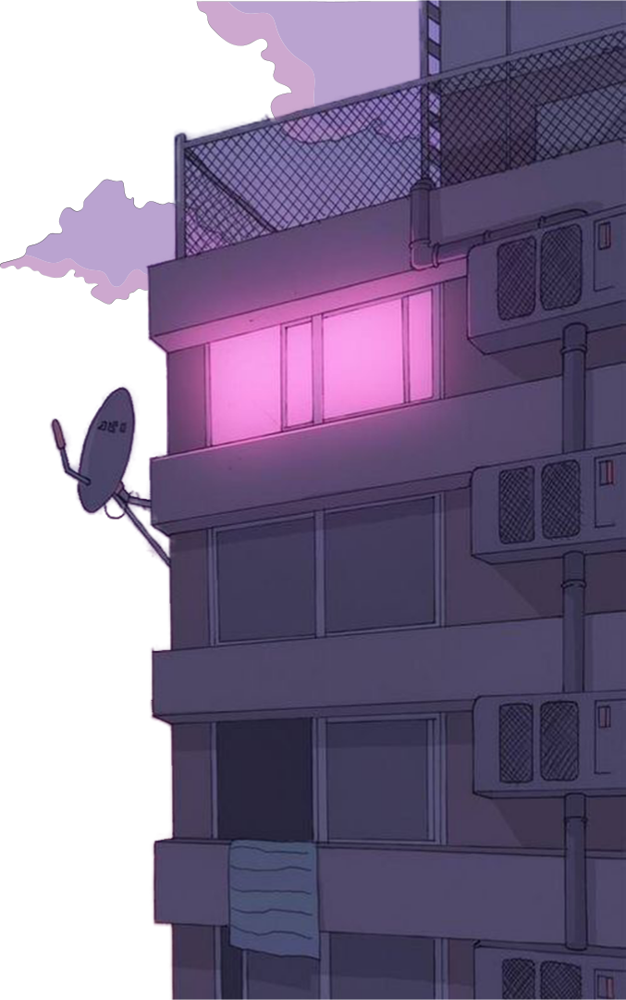
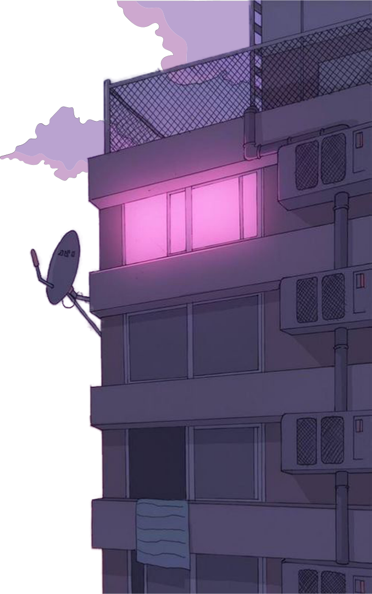

"CITYPOP"
시티팝( シティ・ポップ )은 1970~1980년대에 일본의 존재하던
대중적인 음악의 한 부류를 총칭하는 말입니다.
시티팝은 이름에 걸맞게 도시적인인 분위기를 풍기는 것을 알 수 있습니다.
재팬 타임즈는 , "시티팝은 소울과 퓨전, AOR을 섞은 사운드에
버블경제시절의 도시의 삶을 가사에 얹은 음악"이라고 정의하기도 하였습니다.
이렇게 시티팝에서 알 수 있듯이 제일 중요한 키워드는 "버블경제시대"입니다.
여기서 버블 경제시대란,
"일본이 실제 미국을 제치고 세계에서 제일 잘 살던 시절"을 의미합니다.
그래서 시티팝은 "호시절의 여유로움 , 낭만, 낙천적 사고, 그 시절만의 자유로움"을
보여준다는 것을 알 수 있습니다. 여기서 시티팝을 팝과 디스코 , 알앤비 등 서향의
음악을 동양화 시킨 베겨온 음악이라고 주장하는 사람도 있습니다.
하지만 확실한 한가지는 시티팝이란 음악은 서향의 영향을 받은 것은 사실이지만
어디까지나 일본인이 , 일본에서 추구한, 일본음악이라는 점입니다.
다른 어떤 장르에서도 느낄 수 없는 일본만의 독자적이고 매력적인 분위기가
시티팝이라는 하나의 장르로 발전시켜준 것이라고 생각합니다.
당신은 왜 시티팝에 빠져들게 되었나요?
저희는 이렇게 생각합니다. 겪어보진 않았기에 과거와 추억이 아닌
다신 겪어보질 못할 호시절에 대한 갈망하는 잃어버린 세계라고 생각합니다.
출처 : 김봉현의 랩게임토크 - https://youtu.be/W9JRjlhUYqk?t=425